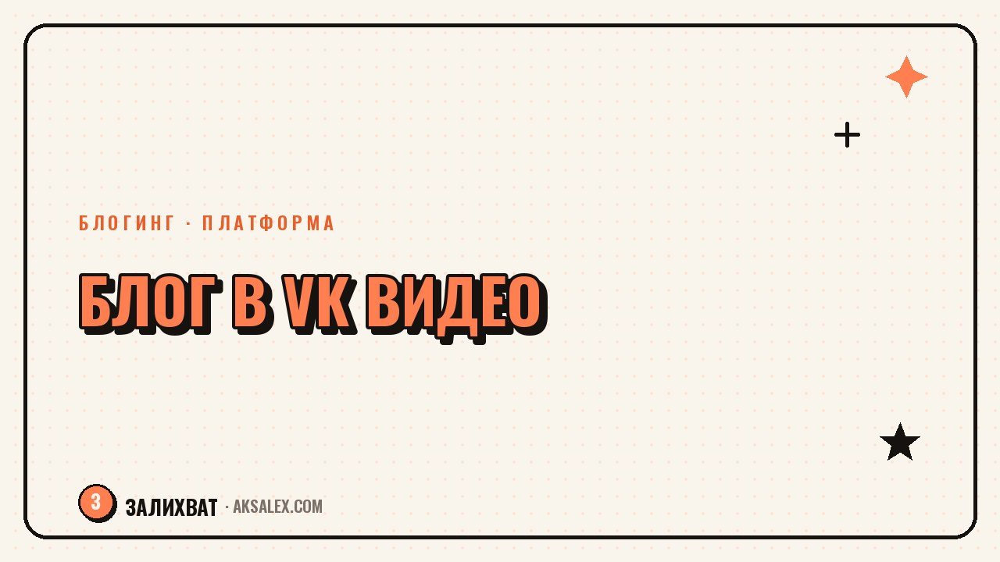

Как вести блог в VK Видео: с чего начать

VK Видео часто путают с обычной соцсетью VK, хотя это отдельная площадка - со своей лентой, рекомендациями и форматами, от коротких клипов до длинных роликов. Для блогера это удобная точка входа: аудитория уже привыкла смотреть видео на русском языке, а конкуренция пока меньше, чем на устоявшихся платформах. Разберём, как завести канал правильно и не слить первые недели на настройки, которые не влияют на просмотры.
Что такое VK Видео и чем это отличается от ленты VK
VK Видео - отдельный сервис внутри экосистемы VK: своё приложение, отдельная лента рекомендаций и алгоритм показа роликов не только подписчикам, но и широкой аудитории платформы. Профиль можно привязать к странице VK, но развивается он по своим правилам, ближе к видеохостингу, чем к соцсети.
Для блогера это значит, что ролик может набрать просмотры даже без раскрученной группы в VK - если он цепляет алгоритм рекомендаций. Это главное отличие от текстовой ленты, где просмотры почти целиком зависят от числа подписчиков.
Какие форматы работают на площадке
Платформа поддерживает и короткие вертикальные клипы, и обычные горизонтальные ролики, и трансляции. Для старта разумно выбрать один формат и довести его до стабильного качества, а не распыляться сразу на всё.
Форматы, с которых стоит начать
- Короткие клипы до минуты - быстрее попадают в рекомендации новым зрителям
- Обзоры и разборы по теме блога - удерживают аудиторию дольше и работают на подписку
- Переупаковка контента из других соцсетей - экономит время на старте
- Прямые эфиры - подходят, когда уже есть небольшое ядро постоянных зрителей
С чего начать канал: первые шаги
Перед первой загрузкой стоит оформить канал так, чтобы случайный зритель из рекомендаций понимал, о чём блог, за пять секунд: понятное название, обложка профиля и описание с главной темой.
- Шаг 1. Определи одну главную тему канала - смешение тем в самом начале путает алгоритм и зрителя
- Шаг 2. Загрузи первые три-пять роликов подряд, а не по одному в неделю - это помогает алгоритму понять тематику
- Шаг 3. Пропиши заголовок и описание с ключевыми словами темы, а не только эмоциональным заголовком
- Шаг 4. Добавь обложку-превью с крупным текстом - на вертикальной ленте мелкий текст не читается
- Шаг 5. Проанализируй статистику первых роликов через неделю и оставь формат, который удержал зрителей дольше
Как нейросети ускоряют подготовку роликов
Для VK Видео, как и для любой видеоплатформы, узкое место - это производство контента, а не идеи. Нейросети закрывают черновую часть работы: сценарий, субтитры, обложки, монтажные склейки.
| Задача | Нейросеть или сервис | Что даёт |
|---|---|---|
| Сценарий и хук ролика | ChatGPT, Claude, GigaChat | Черновой текст и варианты зацепки за первые секунды |
| Субтитры и расшифровка | CapCut, Яндекс.Субтитры | Автоматические субтитры для вертикального формата |
| Обложка для видео | Canva с ИИ-инструментами, Midjourney | Быстрые варианты превью с крупным текстом |
| Монтаж и нарезка на клипы | CapCut, Descript | Автоматическая нарезка длинного видео на короткие фрагменты |
Хорошая обложка ролика решает половину просмотров ещё до того, как зритель услышал хоть одно слово.
Ошибки, которые тормозят рост канала
Чаще всего новички теряют первые недели не на съёмке, а на технических мелочах, которые кажутся важными, но почти не влияют на просмотры. Пока нет статистики хотя бы по десяти роликам, менять оформление и формат рано - делать выводы ещё не на чём.
- Смена темы канала каждую неделю - алгоритм не успевает понять, кому показывать ролики
- Загрузка одного ролика в несколько недель - слишком редкая активность не разгоняет канал
- Копирование чужого формата один в один без своей подачи - зритель быстро замечает шаблонность
- Игнорирование статистики удержания - именно она показывает, где зритель перестаёт смотреть
Как встроить VK Видео в общую стратегию блога
VK Видео редко становится единственной площадкой - его чаще используют как дополнительный канал трафика к уже существующему блогу. Один и тот же ролик с минимальной адаптацией подходит для нескольких платформ сразу, что экономит время на съёмке.
Разумная стратегия - вести VK Видео параллельно с основной площадкой первые пару месяцев, перераспределяя контент. Когда канал наберёт свою аудиторию, под него можно готовить уникальные форматы.
Частые вопросы
Нужна ли раскрученная страница VK, чтобы канал в VK Видео набрал просмотры?
Нет, алгоритм рекомендаций показывает ролики широкой аудитории платформы независимо от числа подписчиков группы. Страница VK помогает, но не является обязательным условием роста.
Какой формат видео лучше для старта на VK Видео?
Короткие вертикальные клипы до минуты быстрее попадают в рекомендации новым зрителям и проще в производстве. Длинные ролики подключают, когда появится понимание, что цепляет аудиторию.
Как часто нужно выкладывать видео, чтобы канал рос?
Для разгона алгоритма на старте полезно выложить несколько роликов подряд, а дальше держать регулярность хотя бы два-три раза в неделю. Редкие публикации заметно замедляют рост канала.
Можно ли переносить ролики из других соцсетей в VK Видео?
Да, с минимальной адаптацией формата и обложки. Это экономит время и позволяет тестировать на новой площадке уже проверенный контент.
Какие нейросети самые полезные для начинающего блогера на видео?
Для сценария и текста - ChatGPT, Claude или GigaChat, для субтитров и монтажа - CapCut, для обложек - Canva с ИИ-функциями. Этого набора достаточно для стабильного производства контента.
Раз тема оказалась полезной, вот что почитать следующим. Признаки, что твоё дело готово к вложениям в курсы, оборудование или команду, и когда с этим лучше подождать.
Читать статью →а не вручную